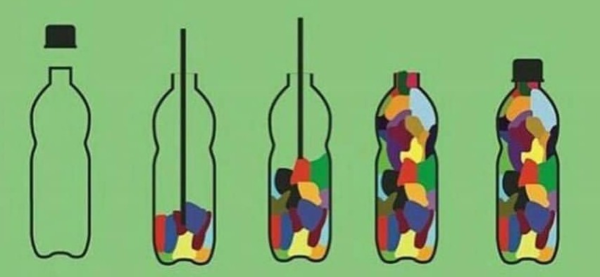

Anímate a hacer un eco-bloque, en casa los puedes poner en el tanque del servicio sanitario, ya que en la mayoría de los casos, los tanques recolectan más agua de la necesaria para jalar la cadena.
¡Esto puede ser un ahorro en tu factura de agua y una excelente manera de colaborar con el medio ambiente!
En nuestra siguiente sección te enseñamos todo el proceso de construcción.
Los residuos que se coloquen dentro de la botella deben estar totalmente limpios y secos, entre ellos:
Además de los residuos no valorizables y de la botella, ocupás un palito para poder compactar los residuos, no pueden quedar espacios de aire.
Recuerde que su Eco-Bloque fue construído correctamente si los residuos están completamente compactos e incluso puede pararse encima de la botella y esta no se deforma.
El peso depende del tamaño de la botella:
| Cantidad de Litros | Peso Ideal |
|---|---|
| 1.5 L | 0.5 kg |
| 2 L | 0.67 kg |
| 2.5 L | 0.83 kg |
| 3 L | 1 kg |
Los centros de acopio que reciben los ecobloques actualmente, se encuentran en el mapa, interactúe con el mismo para encontrar el que le quede más cercano.
Projects Completed
New Projects
Tickets Submitted
Cup of Coffee
“Few would argue that, despite the advancements of feminism over the past three decades, women still face a double standard when it comes to their behavior. While men’s borderline-inappropriate behavior.
“Few would argue that, despite the advancements of feminism over the past three decades, women still face a double standard when it comes to their behavior. While men’s borderline-inappropriate behavior.
“Few would argue that, despite the advancements of feminism over the past three decades, women still face a double standard when it comes to their behavior. While men’s borderline-inappropriate behavior.